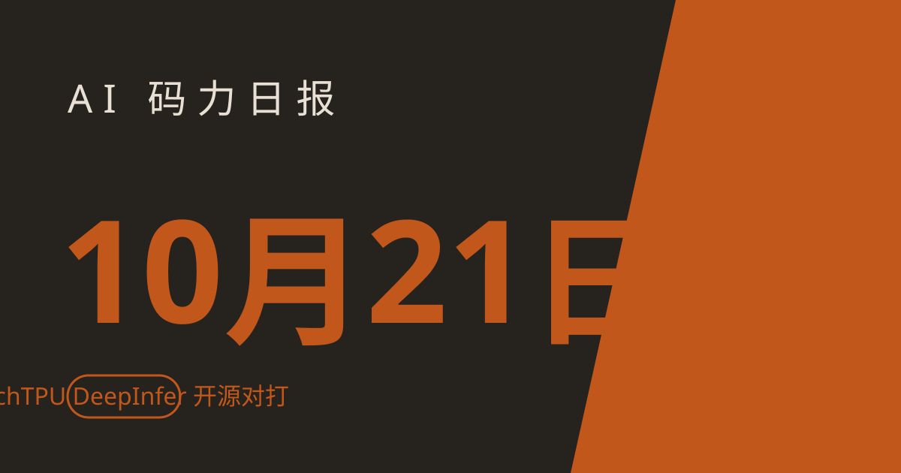

AI 码力日报 · 2026年10月21日

⚡ 一句话速览
- Google × Meta 联手开源 TorchTPU：PyTorch 原生 TPU 后端，
model.to("cuda")改成model.to("tpu")就能迁，已在 Hugging Face 下载榜前 5000 的模型上验证开箱即用——手里有 TPU 配额的人，PyTorch/XLA 那套老办法可以扔了。 - DeepSeek 开源 DeepInfer：自家 V4.1-Flash 的生产级推理栈，Apache 2.0，同时支持 NVIDIA SM100 和华为 Ascend 950 NPU，一天狂揽约 1.1 万 star（截至撰写时）。
- OpenAI 收购生物科技初创 Orchestra Bio：做"AI agent 协调新药研发流程"的平台，团队并入 OpenAI 生命科学平台 Rosalind，金额未披露——OpenAI 和 Anthropic 在 AI 制药这条赛道正式撞车。
- Mistral 发布 Voxtral 3 语音 agent 全家桶：转写 + TTS + 基于 LiveKit 的 voice agent SDK 一条龙，50+ 语言转写 $0.0035/分钟起，可欧盟托管或私有化部署。
🤖 今日 AI Coding 动态
PyTorch 终于能原生跑 TPU 了：Google 和 Meta 联手开源 TorchTPU
跟你有啥关系：如果你在 Google Cloud 上有 TPU 配额，以前用 PyTorch 得走 PyTorch/XLA 那套，又慢又要改代码。现在 TorchTPU 来了——eager 执行优先、支持 torch.compile，model.to("cuda") 改成 model.to("tpu") 就能跑，已经在 vLLM、SGLang、TorchTitan 上验证过。Google 和 Meta 亲自下场给 PyTorch 写 TPU 后端，这在几年前是不可想象的。原文链接
DHS 刚下禁令，DeepSeek 转头开源了自家推理引擎 DeepInfer
10 月 19 日美国 DHS 下令联邦机构清除 DeepSeek（昨天日报讲过），10 月 20 日 DeepSeek 直接把 V4.1-Flash 背后的生产级推理栈开源了：DeepInfer，Apache 2.0。亮点是 FlashMLA、DeepGEMM、DeepEP 这些自研 kernel 全放出来了，确定性采样、结构化输出、异步调度一应俱全，硬件同时支持 NVIDIA SM100 和华为 Ascend 950 NPU。跟你有啥关系：想自建 DeepSeek 推理服务的人可以直接抄它的生产配置；更值得玩味的是时间点——被禁第二天就开源核心基础设施，这公关我给满分。原文链接
银行那套 60 年前的 COBOL，OpenAI 说 GPT-6.1 终于能迁了
OpenAI 10 月 20 日发了篇博客：专门给 COBOL、Fortran、Visual Basic 这些"低资源语言"做了新评估。MultiLangBench 让模型从零写一个 SQLite 兼容的数据库引擎（20 种语言），GPT-6 Astra 平均通过率 87.4%，COBOL 从 10.9% 干到 72.1%；COBOL 迁移测试（迁到 C++、Java、Python 等，行为必须完全一致）GPT-6.1 Sol 准确率 97.9%，而 GPT-5.6 只有 5.4%。跟你有啥关系：银行、政府、保险的遗留系统迁移是个大市场，OpenAI 这是在明牌抢单；做企业服务的人可以开始拿 GPT-6 试老代码了——但 OpenAI 自己也说了，生产迁移还是要专家 review。原文链接
Claude 花 64 小时设计了 31.8 万个蛋白，17 个真能抓住蝎毒
Anthropic 官方研究：让内部 Claude 模型设计针对蝎神经毒素的蛋白 binder，64 小时生成 318,484 个设计，Adaptyv Bio 和 Twist Bioscience 两家实验室实测了 211 个，17 个确认结合，最强的达到单纳摩尔级亲和力。全部 211 个设计和数据已经开源，Anthropic 明确说了：这只是结合验证，不是解药。跟你有啥关系：直接关系不大，但信号很清楚——同一天 OpenAI 收购 Orchestra Bio 杀入新药研发，两家在"AI + 生命科学"这条线正式开战，明年这块的 agent 工具会井喷。原文链接
🐑 今日羊毛
MiniMax M3.1 Flash 免费 72 小时今天到期，最后上车
昨天推过的那只"Space Bunny"：OpenRouter 上 10 月 19 日起 72 小时免费，算下来今天（约 10 月 22 日）就结束；Vercel AI Gateway 的免费也到 10 月 22 日。之后就按 $0.15/$0.60 每百万 token 收费，10 月 23 日官方开源权重。
- 怎么薅：去 OpenRouter 注册拿 key，把 OpenAI 兼容客户端指向
https://openrouter.ai/api/v1，模型填minimax/minimax-m3.1-flash:free，1M 上下文免费用。直达链接 - 有效期：截至约 10 月 22 日（截至撰写时），过期不候；注意免费端点有速率限制
- 适合谁：想白嫖一个 agent/代码模型做压测的人
⭐ 今日 GitHub 热门项目
DietrichGebert/ponytail：让你的 AI agent 像最懒的高级工程师一样思考
一句话：一个 agent skill，核心思想是"最好的代码是没写的那行"——先找现成的、复用标准库，不到万不得已不写新代码。解决什么问题：agent 动不动就手搓 300 行实现一个浏览器自带的日历选择器，ponytail 把这种浪费掐死在摇篮里。作者自带 benchmark：代码量 -53%、token -45%、成本 -26%，且 98% 的高风险逻辑带测试。⭐ 约 169,534（截至撰写时）。适合：每天被 agent 的 token 账单刺痛的人。项目地址
Graphify-Labs/graphify：把整个代码库变成可查询的知识图谱
一句话：/graphify . 一下，代码、文档、SQL schema 变成一张可查询的知识图谱，之后查代码走图不走 grep。解决什么问题：agent 在大仓库里瞎翻文件烧 token；graphify 用 tree-sitter 本地解析（代码部分零 LLM 消耗、数据不离机），每条边还标了是"原文提取"还是"推断"。⭐ 约 130,150（截至撰写时）。适合：刚接手大仓库、想让 agent 少烧钱的人。项目地址
ruvnet/ruflo：给 Claude Code / Codex 配一个"舰队司令部"
一句话：agent 的元编排层（harness）——100+ 专业 agent、可协调的 swarm、自学习记忆、跨机器联邦通信。解决什么问题：单个 agent 干复杂任务容易顾头不顾腚，ruflo 让它们组队干活，还能记住上次的经验。⭐ 约 77,795（截至撰写时）。适合：已经在重度用 Claude Code、想上多 agent 协作的人。项目地址
🛠️ 值得一试的工具：anomalyco/opencode
是什么：开源的 AI coding agent（MIT），终端里跑，内置 build（全权限干活）和 plan（只读分析）两个 agent，一键 Tab 切换，还有桌面 App 测试版。
解决什么痛点：不想被某家大厂的订阅绑死——开源免费，模型自己配，想换就换。
免费额度：软件本身开源免费（MIT）；模型按你自己的 API key 或订阅走。
verdict： 值得试——约 21.9 万 star（截至撰写时）的老牌项目，生态成熟；适合想找个 Claude Code 平替、自己掌控模型的人。认准官方仓库和官网，别下到来路不明的构建。
🎓 3 分钟小教程：3 分钟把代码库变成知识图谱，让 agent 查代码少烧 token
前置条件：Python 3.10+，装了 uv（curl -LsSf https://astral.sh/uv/install.sh | sh），有一个在用的 AI coding 助手（Claude Code / Cursor / Codex / Gemini CLI 都行）。
- 装 CLI（注意包名是
graphifyy，两个 y，别装错）：bash uv tool install graphifyy - 进你的项目目录，注册 skill（自动识别你用的助手）：
bash cd your-project && graphify install - 在 AI 助手里敲：
/graphify . - 建完图之后直接问：
graphify explain "APIRouter"看某个类的来龙去脉，graphify path "A" "B"看两个模块怎么连上的；在浏览器打开graph.html还能点着玩。
预期效果：得到 graph.html（可视化）、GRAPH_REPORT.md（关键概念报告）、graph.json（完整图数据）；以后让 agent 理解大仓库，先查图再读文件，token 花得少，还不容易漏调用链。
数据截至撰写时，仅供参考。